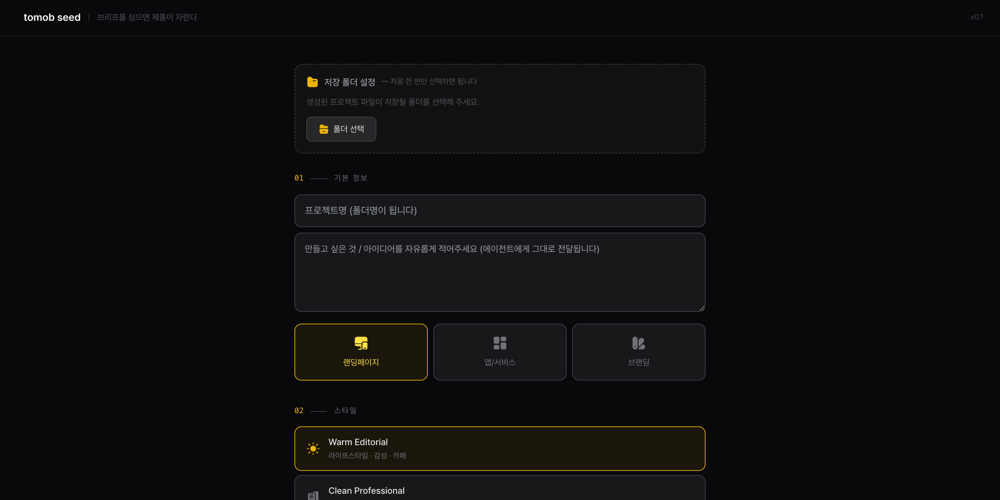
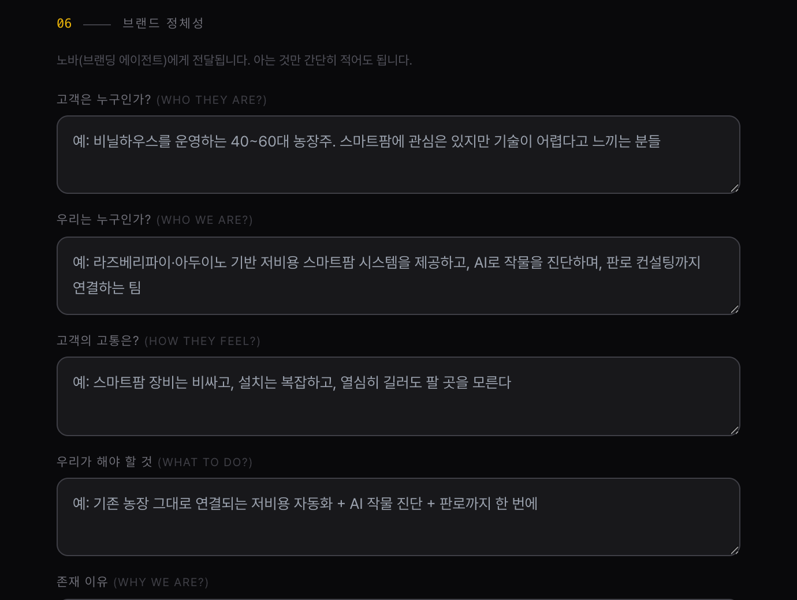
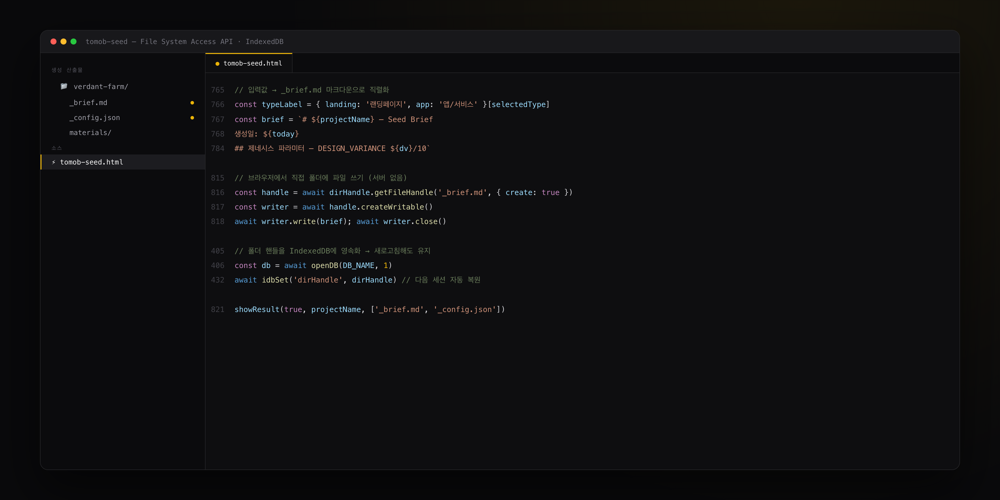

Overview
AI에게 뭘 시키느냐보다,
어떻게 시키느냐가 결과를 바꾼다
TOMOB SEED는 AI 에이전트가 잘 작동하도록 인풋을 구조화하는 브리프 생성 도구예요. 브랜드 이야기, 레퍼런스, 무드를 단계별로 정리해서, AI가 일관된 결과를 낼 수 있는 입력 파일을 만들어줘요.
PEACH 시스템을 운영하다가 생긴 문제에서 시작됐어요. AI 에이전트 자체는 충분히 좋은데, 인풋이 모호하면 결과물이 매번 달라졌어요.

Problem
AI가 멍청한 게 아니었다.
인풋이 모호했던 거였다.
같은 AI 에이전트를 두 클라이언트에게 투입했는데 결과물 수준이 달랐어요. 왜 그런지 파악해보니, 문제는 AI가 아니라 인풋 구조에 있었어요.
"세련된 느낌으로", "젊은 감성으로" 같은 지시는 에이전트 입장에서 해석할 여지가 너무 많아요. 반면 레퍼런스 이미지, 무드, 타겟 페르소나, 핵심 메시지가 구조화된 브리프를 줬을 때는 결과물이 완전히 달라졌어요.
AI에게 0→90을 시키는 게 아니라,
내가 0→10을 만들면 AI가 10→90을 빠르게 채워요.
그게 Harness Engineering이에요.
How It Works
브리프를 구조화하면
에이전트가 달라진다
TOMOB SEED는 브랜드 정보를 단계별로 수집해서 구조화된 브리프 파일을 자동으로 만들어요. AI 에이전트가 읽기 좋은 형식으로 정리된 인풋을 만드는 게 전부예요.
브랜드 인터뷰
브랜드가 무엇을 말하고 싶은지, 누구에게 말하는지, 어떤 분위기인지를 단계별로 질문해요. 추상적인 답변은 구체화 질문으로 이어져요.
레퍼런스 분리
스타일 레퍼런스(구조/레이아웃)와 무드 레퍼런스(분위기/감성)를 분리해서 받아요. 두 가지를 섞으면 에이전트가 혼란스러워하기 때문이에요.
브리프 자동 생성
수집된 정보를 _brief.md + _config.json 형식으로 자동 생성해요. AI 에이전트가 읽고 바로 작업을 시작할 수 있는 구조예요.
로컬 저장 및 관리
File System Access API와 IndexedDB를 활용해 브라우저에서 바로 파일로 저장돼요. 서버 없이도 데이터가 안전하게 유지돼요.


Before / After
구조화된 인풋이
에이전트 결과를 바꾼다
Before — 모호한 인풋
- "세련된 느낌으로 만들어줘"
- "젊은 감성의 브랜딩"
- "고급스러우면서도 친근하게"
- 레퍼런스: 구두로 설명
- 타겟: "20-30대 여성"
After — 구조화된 브리프
- 핵심 메시지: 확정 문장
- 타겟 페르소나: 구체적 설명
- 스타일 레퍼런스: 파일 경로
- 무드 레퍼런스: 분리된 파일
- 금지 방향: 명시적 제한
Build
Notion 폼으로는 안 됐어요,
그래서 직접 만들었어요
Notion 템플릿이나 구글폼으로 먼저 시도해봤는데, AI가 읽기 좋은 형식으로 자동 변환하는 기능이 없었어요. 그냥 쓰기엔 단계마다 손이 너무 많이 갔어요.
어떤 정보를 AI에게 줘야 하는지, 어떤 순서로 물어야 하는지는 실제로 에이전트를 운영해본 사람이 설계해야 맞아요. 그래서 직접 만들었어요.

Outcome
인풋을 바꿨더니
에이전트 결과가 달라졌어요
3×
브리프 구조화 후
에이전트 1차 결과물 채택률 향상
80%
재작업 요청 감소.
모호한 인풋이 재작업의 주원인이었음
0→1
기획자가 직접 빌드.
아이디어에서 실제 도구까지
실사용
내 프로젝트마다 실제로 돌리고 있어요.
브리프 없이는 에이전트 안 켜요
AI를 잘 쓰는 게 프롬프트를 잘 쓰는 거라고 생각했는데, 실제로 해보니 달랐어요.
결과를 결정하는 건 AI에게 무엇을 줬느냐였어요.
TOMOB SEED는 그 구조를 만드는 도구예요.